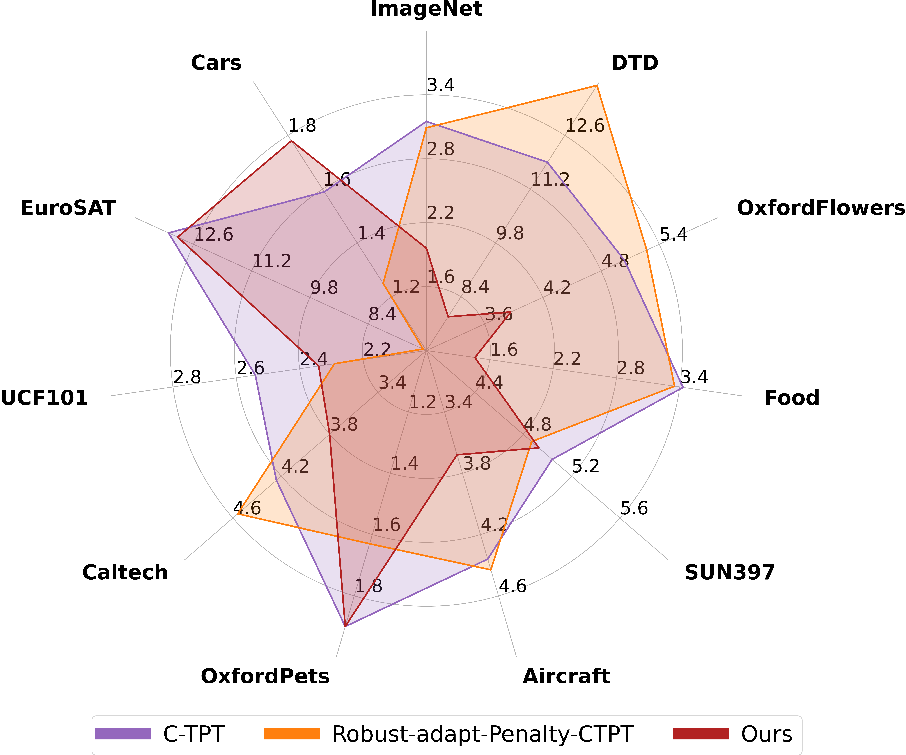

Overview
Test-time prompt tuning (TPT) can boost CLIP-style models’ accuracy on new tasks without labels, but often at the cost of over-confident, mis-calibrated predictions. O-TPT introduces an orthogonality regularizer on class-prompt embeddings, enforcing them to span the unit hypersphere with low cosine similarity—improving calibration across benchmarks.
Key Contributions
- Orthogonal Prompt Regularizer: Add ∥E Eᵀ − I∥₂² to the TPT loss to enforce angular separation among text prompts.
- Comprehensive Evaluation: 11 datasets (ImageNet, fine-grained, OOD variants), CLIP ViT-B/16 & RN50 backbones.
- SOTA Calibration: O-TPT achieves 4.21% ECE vs. 5.13% (C-TPT) and 12.0% (TPT) on fine-grained tasks. 
Methodology
Let E∈ℝ^{C×D} be the matrix of class-prompt embeddings. We optimize:
minₜ L_{TPT}(t) + λ · ∥E Eᵀ − I_C∥₂²
where L_{TPT} is the entropy-minimization loss of TPT.
Results
Across fine-grained datasets, O-TPT consistently lowers ECE without sacrificing accuracy:
Reliability Diagrams
O-TPT corrects over-confidence on ImageNet-A, Aircraft, UCF101, SUN397:
- CLIP ViT-B/16: Fig. 8 compares C-TPT vs. O-TPT reliability :contentReference[oaicite:14]{index=14}.
- CLIP RN-50: Fig. 9 shows similar gains :contentReference[oaicite:15]{index=15}.